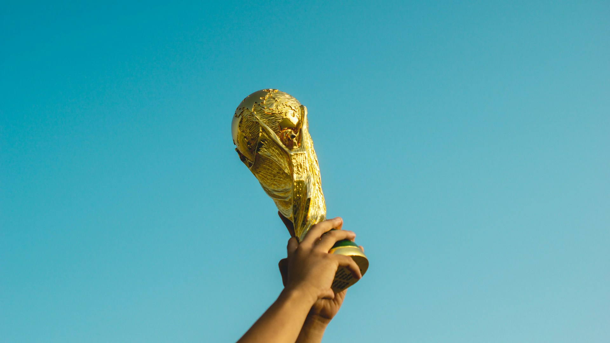
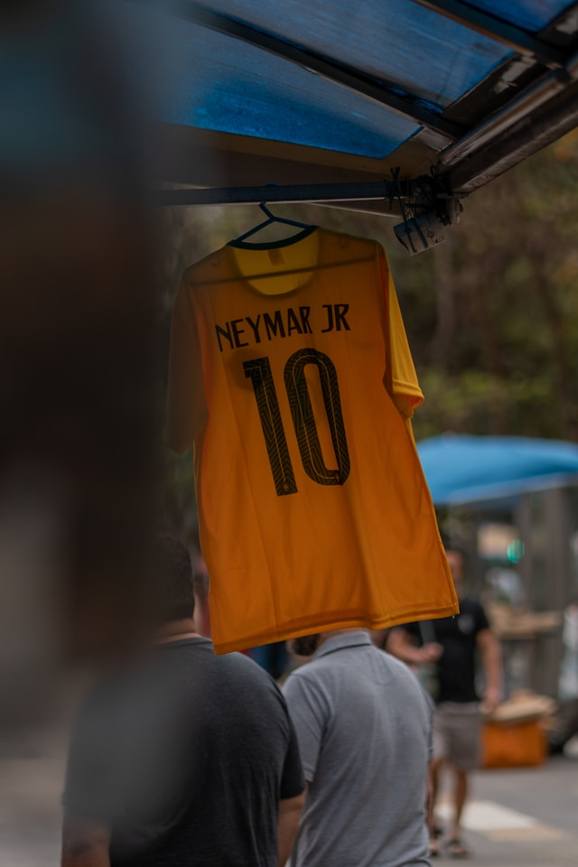
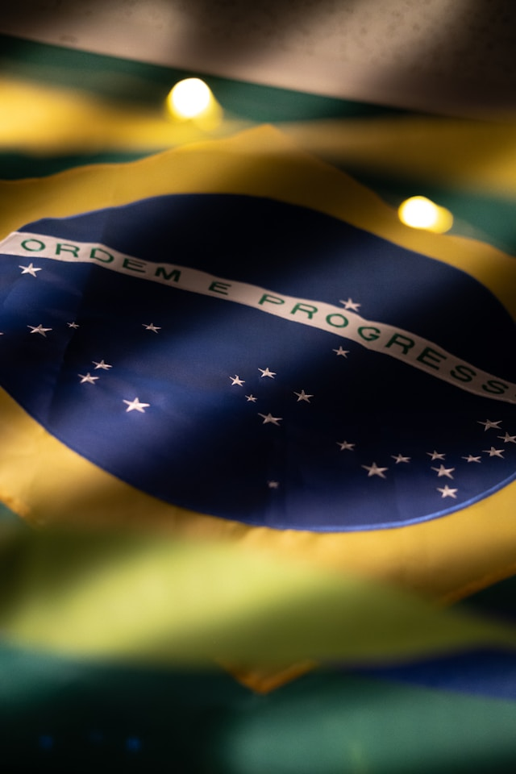
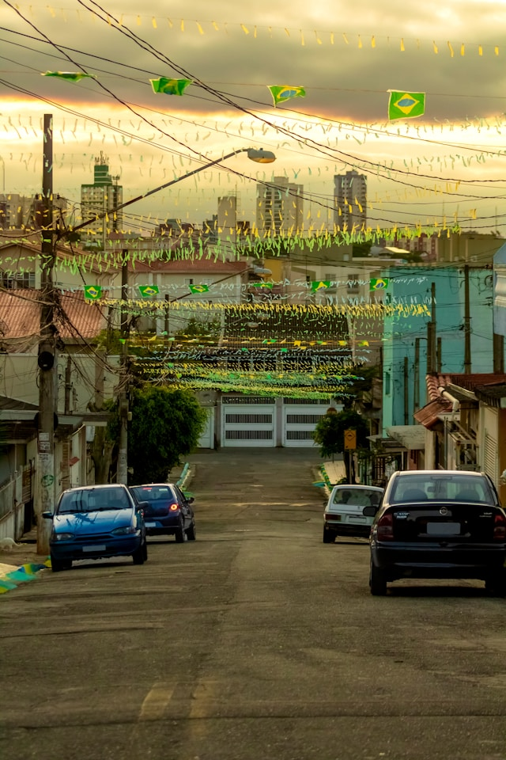
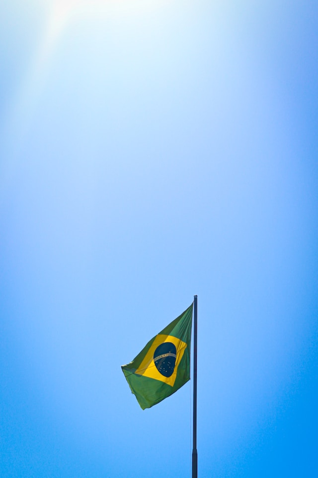

|
|
Copa do mundo 2026 |
Home| |
Seleções| |
Grupos| |
Paises sedes| |
Jogadores favoritos |
|
 |
Copa do Mundo de 2026 promete ser a maior da história do futebolA Copa do Mundo de 2026 está sendo considerada um dos eventos esportivos mais aguardados dos últimos anos. Pela primeira vez na história, o torneio será realizado em três países diferentes: Canadá, Estados Unidos e México. Além disso, a competição contará com 48 seleções participantes, aumentando significativamente o número de jogos e proporcionando mais oportunidades para países de diferentes continentes disputarem o título mundial. A expectativa é de que milhões de torcedores acompanhem os jogos presencialmente nos estádios e bilhões de pessoas assistam às partidas pela televisão e pela internet. As cidades-sede estão investindo em infraestrutura, transporte e segurança para receber visitantes de todo o mundo. Especialistas acreditam que esta edição poderá quebrar diversos recordes de público, audiência e movimentação econômica. A Seleção Brasileira chega ao torneio cercada de expectativas. Após campanhas marcantes em edições anteriores, o Brasil busca conquistar mais um título mundial e reafirmar sua posição como uma das maiores potências do futebol. A preparação da equipe vem sendo acompanhada de perto por torcedores e especialistas, que analisam o desempenho dos jogadores e as estratégias da comissão técnica. Outro fator que torna a Copa de 2026 especial é a presença de novas seleções que conseguiram classificação graças ao aumento do número de vagas. Isso promete trazer confrontos inéditos e aumentar a competitividade do torneio. Times tradicionais continuarão sendo favoritos, mas a história das Copas mostra que surpresas sempre podem acontecer. A tecnologia também terá papel fundamental na competição. Recursos avançados de arbitragem por vídeo, sistemas de monitoramento e ferramentas de análise de desempenho devem contribuir para partidas mais justas e organizadas. A FIFA espera que a combinação entre inovação tecnológica e paixão pelo futebol transforme o evento em uma experiência única para atletas e torcedores. Com estádios modernos, grandes estrelas do futebol mundial e uma organização inédita envolvendo três nações, a Copa do Mundo de 2026 já é vista como um marco histórico para o esporte. A competição promete reunir diferentes culturas, aproximar povos e celebrar aquilo que o futebol tem de melhor: a capacidade de unir milhões de pessoas em torno de um mesmo espetáculo. Enquanto a bola não rola, a expectativa continua crescendo, e os fãs do esporte contam os dias para acompanhar mais um capítulo da história da maior competição de futebol do planeta. |
|
 |
 |
 |
 |
Parceiros |
Eventos |
Galeria |
Links uteis |
| Todos os direitos reservados. | |||